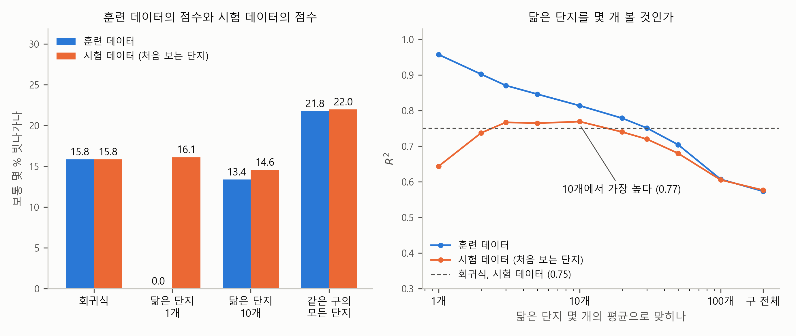

1. 보고서 — 처음 보는 단지의 아파트 가격을 얼마나 잘 맞히나#
이번 장의 주제는 머신러닝입니다. 지난 일의 기록에서 규칙을 찾아내, 아직 답을 모르는 것을 맞히는 방법이죠. 내비게이션은 지금 출발하면 몇 분 뒤에 도착할지 알려 줍니다. 메일함은 스팸 메일을 알아서 걸러 냅니다. 쇼핑몰은 내가 살 만한 물건을 첫 화면에 보여 주고, 카드 회사는 평소와 다른 결제가 일어나면 본인이 쓴 것이 맞는지 묻는 문자를 보냅니다. 은행은 대출을 신청한 사람이 돈을 제때 갚을지를 따지고, 편의점 본사는 내일 이 매장에서 도시락이 몇 개 팔릴지를 가늠해 물건을 보냅니다. 모두 아직 일어나지 않았거나 아직 확인하지 못한 것을 맞히는 일이고, 오늘날 이런 일에는 대개 머신러닝이 쓰입니다.
지금까지 이 책의 보고서는 다른 것을 물었습니다. 단순회귀분석 장과 다중회귀분석 장의 보고서는 “무엇이 가격의 차이를 설명하는가”를 물었고, 인과 추론 장의 보고서는 “무엇이 결과를 바꾸는가”를 물었습니다. 이번 장의 보고서는 “얼마나 잘 맞히는가”를 묻습니다.
규칙을 적어 주는 대신 예를 보여 준다#
스팸 메일을 걸러 내는 프로그램을 만든다고 해 봅시다. 먼저 떠오르는 방법은 사람이 규칙을 적어 주는 것입니다. “제목에 ‘무료’나 ‘당첨’이 들어 있으면 스팸이다.” 그런데 이 방법은 금방 막힙니다. 스팸을 보내는 쪽이 ‘무료’를 ‘무.료’로 바꾸면 규칙을 빠져나갑니다. 그 표기를 막는 규칙을 하나 더 적으면 또 다른 표기가 나옵니다. 게다가 친구가 보낸 “무료 전시회 같이 갈래?”까지 스팸으로 걸러 버립니다. 스팸을 알아보는 규칙을 사람이 빠짐없이 적는 것은 불가능에 가깝습니다.
방법을 바꿔 봅시다. 규칙을 적는 대신 예를 보여 주는 것입니다. 사람들이 스팸이라고 신고한 메일 수십만 통과 그렇지 않은 메일 수십만 통을 컴퓨터에 넣어 주고, 두 묶음을 가장 잘 가르는 규칙을 컴퓨터가 계산해 내게 합니다. 어떤 낱말이 스팸에 유난히 자주 나오는지, 보낸 주소가 어떤 모양인지, 링크가 몇 개나 달렸는지를 사람이 하나하나 따져 주지 않아도 됩니다. 새 메일이 오면 컴퓨터는 그렇게 계산해 둔 규칙으로 스팸인지 아닌지를 가릅니다.
이렇게 사람이 규칙을 일일이 적어 주는 대신, 답이 달린 예를 많이 보여 주고 컴퓨터가 그 데이터에서 규칙을 계산해 내게 하는 방법을 머신러닝(machine learning)이라고 부릅니다. 우리말로 기계학습이라고도 합니다. 기계가 배운다는 이름은 여기서 나왔습니다. 예를 보고 규칙을 익히는 것이 사람이 배우는 모습과 닮았기 때문입니다.
사람도 많은 것을 이렇게 배웁니다. 아이는 강아지의 정의를 듣고 강아지를 알아보는 것이 아닙니다. 강아지를 여러 번 보고, 볼 때마다 “저건 강아지야”라는 말을 듣다 보면, 처음 보는 강아지도 알아봅니다. 동네에서 오래 일한 공인중개사는 집을 보고 “이 정도면 9억쯤 받겠네요”라고 말합니다. 가격을 계산하는 공식을 배워서가 아니라, 비슷한 집이 얼마에 팔렸는지를 수없이 봐 왔기 때문입니다. 중고차 매매상이 차를 한 바퀴 둘러보고 값을 부르는 것도, 경력이 긴 의사가 엑스레이 사진에서 이상한 곳을 금방 찾아내는 것도 같습니다. 머신러닝은 이렇게 “많이 보고 익히는” 일을 컴퓨터가 데이터로 하게 만든 것입니다. 컴퓨터는 사람이 평생 볼 수 있는 것보다 훨씬 많은 예를 짧은 시간에 봅니다.
표 1-1은 머신러닝이 쓰이는 일 여섯 가지를 정리한 것입니다. 왼쪽 열은 컴퓨터에 보여 주는 지난 예이고, 오른쪽 열은 그 예로 맞히려는 것입니다.
표 1-1. 컴퓨터에 보여 주는 예와 머신러닝이 예측하려는 것
컴퓨터에 보여 주는 예 |
예측하려는 것 |
|---|---|
스팸인지 아닌지 표시가 달린 지난 메일 |
이 메일은 스팸인가 |
정상 결제와 도용으로 밝혀진 결제의 기록 |
이 결제는 카드 주인이 한 것인가 |
지난 대출자들의 소득, 직업과 실제로 갚았는지의 기록 |
이 사람은 대출을 제때 갚을까 |
같은 길을 지나간 차들의 출발 시각과 걸린 시간 |
지금 출발하면 몇 분 걸리나 |
지난 날들의 요일, 날씨와 그날 팔린 개수 |
내일 도시락이 몇 개 팔리나 |
면적, 층, 연식, 구와 거래가격이 적힌 실거래 기록 |
이 아파트는 얼마에 거래되나 |
표에서 보듯이 여섯 가지 예는 구조가 같습니다. 지난 예에는 답이 달려 있고, 지금 예측하려는 것에는 답이 없습니다. 지난 메일에는 스팸인지 아닌지가 표시되어 있지만 방금 온 메일에는 없습니다. 지난 거래에는 거래가격이 적혀 있지만 이제 내놓으려는 아파트에는 없습니다. 머신러닝은 답이 달린 예에서 규칙을 계산하고, 그 규칙을 답이 없는 새것에 적용합니다. 표의 위쪽 세 가지는 종류를 맞히고(스팸인가 아닌가, 정상인가 도용인가, 갚는가 못 갚는가), 아래쪽 세 가지는 숫자를 맞힙니다(몇 분, 몇 개, 얼마). 이번 장에서 다루는 것은 숫자를 맞히는 쪽, 표의 맨 아래 행입니다.
요즘 누구나 쓰는 대화형 AI도 머신러닝으로 만듭니다. 사람이 쓴 글을 아주 많이 보여 주고, 앞에 놓인 말 다음에 어떤 말이 올지를 맞히게 한 것입니다. 문법 규칙을 사람이 적어 준 것이 아닙니다. 규모는 비교할 수 없이 크지만, 답이 달린 예에서 규칙을 계산해 새것을 맞힌다는 점은 스팸 메일을 가르는 프로그램과 같습니다.
우리는 이미 머신러닝을 해 봤다#
머신러닝이 낯선 이름일 수는 있어도, 하는 일까지 낯선 것은 아닙니다. 단순회귀분석 장에서 우리는 노원구 아파트 매매 7,366건으로 전용면적과 거래가격 사이의 회귀직선을 구했습니다. 그리고 그 직선으로 전용 84㎡ 아파트의 가격을 8.3억원으로 예측했습니다. 답이 달린 예(면적과 거래가격이 적힌 거래 기록)에서 규칙(회귀직선)을 계산하고, 그 규칙으로 새 아파트의 가격을 맞힌 것입니다. 머신러닝의 정의에 그대로 들어맞습니다. 회귀분석은 머신러닝을 배울 때 가장 먼저 만나는 방법 가운데 하나입니다.
달라지는 것은 방법이 아니라 물음입니다. 다중회귀분석 장에서는 회귀식을 구한 다음 계수를 하나하나 해석했습니다. 다른 조건이 같을 때 한 층 높으면 가격이 1.1% 높다는 식이었죠. 이번 장에서도 회귀식을 구하지만 계수는 보지 않습니다. 그 식에 구, 연식, 최고층을 넣었을 때 나오는 가격이 실제 가격에서 얼마나 빗나가는지만 봅니다. 맞히는 것이 목적이라면 계수가 무슨 뜻인지는 몰라도 되고, 계수라는 것이 아예 없는 방법을 써도 됩니다. 이번 장의 보고서에 그런 방법이 하나 나옵니다.
외운 것인가, 배운 것인가#
맞히는 일에는 고유한 함정이 하나 있습니다. 이미 본 예는 외워 버리면 틀릴 일이 없다는 것입니다.
스팸 메일로 돌아가 봅시다. 보여 준 메일 수십만 통을 통째로 저장해 두고, 똑같은 메일이 다시 오면 저장해 둔 답을 그대로 내놓는 프로그램을 생각해 보세요. 이 프로그램은 보여 준 메일에 대해서는 하나도 틀리지 않습니다. 하지만 내일 올 메일은 저장해 둔 어느 메일과도 똑같지 않으므로, 이 프로그램은 아무 쓸모가 없습니다. 시험공부에서도 같은 일이 생깁니다. 기출문제집의 답을 통째로 외운 학생은 그 문제집을 다시 풀면 만점을 받지만, 그 점수는 실력이 아닙니다. 실력은 본시험에서 처음 보는 문제를 풀어 봐야 알 수 있습니다.
그래서 머신러닝에서는 점수를 반드시 처음 보는 데이터로 매깁니다. 가진 데이터를 전부 보여 주지 않고 일부를 따로 떼어 숨겨 두었다가, 규칙을 다 계산한 뒤에 숨겨 둔 데이터를 꺼내 맞혀 보게 합니다. 컴퓨터가 예를 외운 것인지, 새것에도 통하는 규칙을 배운 것인지는 그때 드러납니다. 이 장의 제목이 “처음 보는 데이터로 채점하기”인 까닭입니다.
이 점은 AI에게 분석을 맡길 때 특히 중요합니다. AI에게 가격을 맞히는 모형을 만들어 달라고 하면 금방 만들어 주고, “오차 10%” 같은 점수도 함께 내놓습니다. 계산이 틀리는 일은 드뭅니다. 하지만 그 점수가 어떤 데이터로 매긴 것인지, 그 데이터가 정말 처음 보는 데이터였는지는 우리가 따져야 합니다. 이번 장의 보고서에는 같은 모형인데도 어떤 데이터로 채점하느냐에 따라, 예측이 빗나간 정도가 0%도 되고 16%도 되는 장면이 나옵니다.
데이터 — 같은 실거래가, 이번에는 단지를 본다#
데이터의 출발점은 다중회귀분석 장과 동일합니다. 국토교통부 실거래가 공개시스템에서 내려받은 서울 아파트 매매 1년치(계약일 2025년 10월 ~ 2026년 10월)에서 해제거래와 직거래를 뺀 63,163건입니다. 이번 장에서는 이 거래 기록을 두 번 손질해서 씁니다.
첫째, 전용 84㎡ 거래만 남깁니다. 서울에서 가장 흔한 면적이고, 전용면적이 84㎡ 이상 85.5㎡ 미만인 거래가 19,987건입니다. 면적이 같은 집만 남기면 “이 단지는 얼마”를 숫자 하나로 말할 수 있습니다.
둘째, 거래를 단지별로 모읍니다. 내려받은 CSV에는 거래마다 단지 이름이 적혀 있습니다. 이름이 같은 단지가 다른 동네에도 있어서, 동 이름과 단지 이름이 모두 같은 거래를 한 단지로 셌습니다. 그렇게 세면 19,987건은 2,709개 단지의 거래입니다. 단지마다 84㎡ 거래가격의 중위값을 구해 그 단지의 가격으로 삼습니다. 이 장에서 “단지의 가격”이라고 하면 이 값을 가리킵니다. 집 한 채의 가격이 아닙니다. 한 단지 안에서도 층과 동에 따라 집마다 거래가격이 다르지만, 이 장에서는 그 차이를 다루지 않고 단지마다 가격을 숫자 하나로 놓습니다.
그래서 이 장의 데이터는 한 행이 거래 한 건이 아니라 단지 하나입니다. 관측 하나하나가 개별 아파트가 아니라 단지라는 뜻입니다. 맞히려는 것도 집 한 채의 가격이 아니라 단지의 가격입니다. 모두 2,709행이고, 단지마다 가격과 함께 다음 세 가지가 적혀 있습니다.
구: 서울 25개 구
연식: 2026에서 건축년도를 뺀 값. 지은 지 몇 년 됐는지를 나타냅니다
최고층: 그 단지에서 1년 동안 거래된 집 가운데 가장 높은 층. 그 단지가 얼마나 고층인지를 나타냅니다. 84㎡뿐 아니라 그 단지의 모든 거래에서 찾았습니다. 거래가 적은 단지는 실제 건물 높이보다 낮게 잡힐 수 있습니다
다중회귀분석 장에서 쓴 전용면적은 빠졌습니다. 모든 단지가 84㎡로 같기 때문입니다.
단지의 가격은 가장 낮은 곳이 2.9억원, 가장 높은 곳이 59억원이고, 중위값은 9.8억원입니다. 단지마다 거래 건수도 크게 다릅니다. 1년 동안 84㎡가 116건 거래된 단지가 있는가 하면, 딱 한 건만 거래된 단지가 618개로 전체의 23%입니다.
처음 보는 단지의 가격#
아파트 가격을 맞혀야 하는 사람은 많습니다. 집을 내놓으려는 사람은 얼마를 불러야 할지 알아야 하고, 집을 담보로 돈을 빌려주는 은행은 그 집의 가치를 알아야 합니다. 어느 쪽이든 출발점은 그 단지의 시세, 곧 그 단지에서 같은 면적의 집이 보통 얼마에 거래되는가입니다.
거래가 잦은 단지라면 어렵지 않습니다. 같은 단지, 같은 면적의 집이 지난달에 얼마에 팔렸는지 찾아보면 됩니다. 어려운 것은 그런 기록이 없는 단지입니다. 이제 막 입주를 시작한 단지에는 거래 기록이 아직 없습니다. 세대 수가 적은 단지는 몇 해씩 거래가 없기도 합니다. 앞에서 본 것처럼 이 데이터에서도 단지 넷 가운데 하나는 1년 동안 84㎡ 거래가 한 건뿐이었습니다. 이런 단지는 그 단지의 지난 가격을 참고할 수 없습니다. 참고할 수 있는 것은 다른 단지들의 가격뿐입니다. 같은 구에서 연식과 최고층이 비슷한 단지가 얼마인지를 보고 가격을 맞혀야 합니다.
쉬운 일은 아닙니다. 노원구에서 전용 84㎡ 아파트가 다섯 건 이상 거래된 단지는 92곳인데, 단지의 가격은 가장 낮은 곳이 4.7억원, 가장 높은 곳이 13.4억원입니다. 구와 면적이 같아도 단지에 따라 가격이 세 배 가까이 다릅니다.
그래서 이 장의 질문은 이것입니다. 한 번도 본 적 없는 단지의 가격을, 다른 단지들의 가격으로 얼마나 잘 맞힐 수 있을까요? 그 단지에 대해 아는 것은 구, 연식, 최고층뿐입니다. 다시 말하지만 맞히려는 것은 그 단지의 어느 집 한 채가 얼마에 팔릴지가 아니라, 그 단지의 84㎡가 보통 얼마인지입니다.
그런데 얼마나 잘 맞혔는지를 알려면 정답이 있어야 합니다. 실제로 거래 기록이 없는 단지에는 정답도 없으니, 그런 단지로는 맞혔는지 확인할 수 없습니다. 그래서 가격을 아는 단지를 씁니다. 2,709개 단지 가운데 5분의 1 정도인 500개를 무작위로 골라 숨겨 둡니다. 남은 2,209개 단지만 써서 규칙을 계산하게 한 다음, 따로 떼어 둔 500개 단지의 가격을 맞혀 보게 합니다. 컴퓨터에게 그 500개 단지는 한 번도 본 적 없는 단지입니다. 한편 우리는 그 단지의 실제 가격을 알고 있으니, 컴퓨터가 예측한 가격이 얼마나 빗나갔는지 채점할 수 있습니다. 이렇게 컴퓨터가 규칙을 계산하는 데 쓰는 데이터를 훈련 데이터(training data)라고 하고, 규칙을 계산할 때는 쓰지 않고 따로 떼어 두었다가 채점에만 쓰는 데이터를 시험 데이터(test data)라고 합니다. 여기서는 2,209개 단지가 훈련 데이터이고, 500개 단지가 시험 데이터입니다.
데이터에서 규칙을 계산해 예측을 내놓는 방법 하나하나를 모형(model)이라고 부릅니다. 우리는 단지별 아파트 가격을 예측하는 모형으로 두 가지를 씁니다. 첫째 모형은 다중회귀분석 장에서 배운 회귀식입니다. 구, 연식, 최고층을 변수로 넣은 회귀식을 구하고, 그 식에 단지의 구, 연식, 최고층을 넣어 가격을 계산합니다. 둘째 모형은 닮은 단지를 찾는 방법입니다. 가격을 맞히려는 단지와 같은 구에서 연식과 최고층이 가장 비슷한 단지를 몇 개 찾아, 그 가격의 평균을 답으로 내놓습니다. 동네 공인중개사가 비슷한 단지의 시세를 떠올려 값을 가늠하는 것과 같은 생각입니다. 이 모형에는 회귀식도 계수도 없습니다.
이 일을 AI에게 맡겨 봤습니다. AI가 데이터 파일을 열어 84㎡ 거래를 단지별로 모으게 한 다음, 앞에서 설명한 두 가지 모형이 처음 보는 단지의 가격을 얼마나 잘 맞히는지를 1쪽 보고서로 요청했습니다. 그렇게 받은 보고서가 아래에 있습니다. 먼저 한 번 읽어 보세요. 다중회귀분석 장과 같은 실거래 데이터에서 출발했는데도 보고서의 생김새가 꽤 다를 것입니다.
AI가 만든 1쪽 보고서
처음 보는 단지의 아파트 가격을 얼마나 잘 맞히나 — 회귀식, 그리고 닮은 단지
분석 대상: 서울 25개 구에서 전용 84㎡ 아파트가 거래된 단지 2,709개 (매매 실거래 19,987건, 계약일 2025년 10월 ~ 2026년 10월, 해제거래와 직거래 제외) · 단지를 무작위로 나눠 훈련 데이터 2,209개, 시험 데이터 500개 · 출처: 국토교통부 실거래가 공개시스템
요약
구, 연식, 최고층만 알 때 닮은 단지 10개의 가격을 평균해 처음 보는 단지의 84㎡ 가격을 예측하면 보통 15% 빗나간다. 회귀식으로는 16%, 모든 단지를 전체 평균 가격 하나로 예측하면 36%다.
가장 닮은 단지 1개로 예측하면 훈련 데이터에서는 0%, 시험 데이터에서는 16% 빗나간다(다르게 나누면 16 ~ 19%).
닮은 단지를 많이 볼수록 좋아지는 것도 아니다. 같은 구의 모든 단지를 평균하면 22% 빗나간다.

그림. 왼쪽: 예측 가격이 실제 가격에서 보통 몇 % 빗나가는지를 훈련 데이터(파랑)와 시험 데이터(주황)에서 계산한 값. 오른쪽: 닮은 단지를 몇 개 보는지에 따른 \(R^2\). 점선은 회귀식의 시험 데이터 \(R^2\)이다.
예측 결과
예측하는 것: 단지의 84㎡ 중위 거래가
회귀식: 로그(가격) = 최고층 + 연식 + 연식² + 구 더미 24개
닮은 단지 \(k\)개: 같은 구에서 연식과 최고층이 가장 가까운 훈련 단지 \(k\)개의 평균
모형 |
훈련 오차 |
시험 오차 |
시험 \(R^2\) |
다르게 나눈 다섯 번의 시험 오차 |
|---|---|---|---|---|
전체 평균 가격 하나로 |
— |
36.4% |
0.00 |
36.2 ~ 37.9% |
회귀식 |
15.8% |
15.8% |
0.75 |
15.5 ~ 16.9% |
닮은 단지 1개 |
0.0% |
16.1% |
0.64 |
16.0 ~ 19.4% |
닮은 단지 10개 |
13.4% |
14.6% |
0.77 |
14.1 ~ 15.8% |
같은 구의 모든 단지 |
21.8% |
22.0% |
0.58 |
21.3 ~ 24.1% |
주: 오차는 예측 가격이 실제 가격에서 벗어난 비율의 중위값, \(R^2\)은 로그(가격) 기준, 최고층은 거래된 집 가운데 가장 높은 층
해석
오차 읽는 법 — 시험 오차 15%는 시험 데이터의 단지 가운데 절반은 예측 가격이 실제 가격에서 15% 안쪽으로 빗나갔고, 나머지 절반은 그보다 크게 빗나갔다는 뜻이다. 예측 보고서에서는 계수가 아니라 이 오차를 본다.
훈련 데이터와 시험 데이터 — 모형은 훈련 데이터로 만들고, 점수는 모형을 만들 때 쓰지 않은 시험 데이터로 매긴다. 닮은 단지 1개 모형은 훈련 데이터에서 0%지만 시험 데이터에서는 16.1%다. 회귀식은 두 점수가 거의 같다(둘 다 15.8%).
몇 개를 볼 것인가 — 시험 오차는 1개 16.1%, 10개 14.6%, 같은 구의 모든 단지 22.0%로 가운데가 가장 낮다. 몇 개를 볼지는 시험 데이터가 아니라 훈련 데이터 안의 교차검증으로 살폈고, 5개와 10개가 거의 같아 10개를 썼다.
분할에 따른 차이 — 시험 데이터가 500개 단지뿐이어서, 단지를 다르게 나누면 점수가 1 ~ 2%포인트 달라진다. 닮은 단지 10개 모형과 회귀식의 차이도 그 정도다.
한계
이 점수는 2025년 10월 ~ 2026년 10월 서울의 84㎡ 아파트에 대한 것이다. 시기, 지역, 면적이 다르면 다시 채점한다.
가격을 잘 맞히는 것과 가격이 왜 그런지를 아는 것은 다르다. 무엇을 바꾸면 가격이 달라지는지는 이 결과로 말할 수 없다.
보고서 내려받기: PDF(그림 포함) · 원문(.md)
보고서의 다섯 부분#
보고서는 지금까지와 같이 다섯 부분으로 되어 있습니다. 요약, 그림, 예측 결과, 해석, 그리고 한계입니다.
요약은 세 줄입니다. 첫 줄이 질문의 답입니다. 닮은 단지 10개의 가격을 평균해 처음 보는 단지의 가격을 예측하면 보통 15% 빗나가고, 회귀식으로는 16%, 모든 단지를 전체 평균 가격 하나로 예측하면 36% 빗나갑니다. 둘째 줄은 이상한 숫자를 보여 줍니다. 가장 닮은 단지 1개의 가격으로 예측하면 훈련 데이터에서는 0% 빗나가는데, 시험 데이터에서는 16% 빗나갑니다. 0%와 16% 가운데 어느 쪽이 맞는 점수일까요? 셋째 줄은 반대쪽 끝을 보여 줍니다. 닮은 단지를 많이 볼수록 좋아지는 것도 아니어서, 같은 구의 모든 단지를 평균하면 22% 빗나갑니다. 앞에서 말한 “외운 것인가, 배운 것인가”의 문제가 이 두 줄에 숫자로 나타나 있습니다.
그림은 패널이 둘입니다. 왼쪽 패널은 모형마다 막대가 두 개씩입니다. 파란 막대는 훈련 데이터에서 빗나간 정도, 주황 막대는 시험 데이터에서 빗나간 정도입니다. 회귀식은 두 막대의 높이가 거의 같고, 닮은 단지 1개 모형은 파란 막대가 아예 보이지 않습니다. 오른쪽 패널은 닮은 단지를 몇 개 보느냐에 따라 점수가 어떻게 달라지는지를 그렸습니다. 세로축은 단순회귀분석 장에서 배운 \(R^2\)입니다. 훈련 데이터의 선은 왼쪽으로 갈수록 높아지기만 하는데, 시험 데이터의 선은 가운데가 가장 높습니다.
예측 결과의 표가 지금까지와 가장 다릅니다. 회귀식을 썼는데도 표에 계수가 없습니다. 표준오차도 \(p\)값도 없습니다. 행은 변수가 아니라 모형이고, 열은 그 모형이 얼마나 빗나갔는지입니다. 계수는 왜 싣지 않는지, 훈련 데이터의 오차와 시험 데이터의 오차를 왜 나란히 두는지는 이 장을 읽으며 알게 될 것입니다. 맨 오른쪽 열에는 단지를 다르게 나눠 다섯 번 더 채점한 결과가 있습니다.
해석은 “오차 읽는 법”으로 시작해, 훈련 데이터와 시험 데이터, 닮은 단지를 몇 개 볼 것인가, 분할에 따른 차이를 차례로 설명합니다. 한계는 두 줄입니다. 특히 둘째 줄, 가격을 잘 맞히는 것과 가격이 왜 그런지를 아는 것은 다르다는 말을 기억해 두세요.
이 장의 진행 순서#
머신러닝은 한 장으로 끝나지 않습니다. 방법이 다양하고, 방법마다 잘하는 일과 조심할 점이 다릅니다. 이 책은 그 방법들을 여러 장에 걸쳐 다루고, 이번 장이 그 출발점입니다. 그래서 이번 장에서는 가장 단순한 방법 두 가지만 씁니다. 방법을 여럿 소개하는 대신, 어떤 방법을 쓰든 꼭 알아야 하는 생각과 용어를 먼저 익힙니다. 맞힌 정도를 무엇으로 채점하는가, 데이터를 왜 둘로 나누는가, 외우는 것과 배우는 것은 어디서 갈리는가, 그 점수를 믿어도 되는지는 어떻게 확인하는가. 이 장의 마지막 절에서는 뒤에 배울 방법들을 지도 하나로 펼칩니다.
다음 다섯 절이 이 보고서를 한 부분씩 설명하고, 보고서 밖으로 넓혀 갑니다.
설명하기와 맞히기 — 같은 회귀식을 설명에 쓸 때와 맞히는 데 쓸 때 무엇이 달라지는가. “보통 몇 % 빗나간다”는 오차는 어떻게 계산하는가. 요약 첫 줄의 16%와 36%.
외운 것과 배운 것 — 닮은 단지 1개 모형은 왜 훈련 데이터에서 0% 빗나가는가. 데이터를 훈련 데이터와 시험 데이터로 나누는 까닭. 요약 둘째 줄의 0%와 16%.
알맞은 유연함 — 닮은 단지를 1개 볼 때와 구 전체를 볼 때 무엇이 달라지는가. 왜 너무 적지도 너무 많지도 않은 개수가 가장 좋은가. 몇 개를 볼지는 시험 데이터를 보지 않고 어떻게 고르는가. 요약 셋째 줄의 22%, 그림 오른쪽 패널, 해석의 교차검증.
점수를 믿어도 되나 — 시험 데이터의 점수는 분할에 따라 얼마나 흔들리는가. 시험 데이터로 채점했는데도 점수가 부풀려지는 때는 언제인가. 표의 맨 오른쪽 열과 해석의 넷째 항목.
머신러닝의 지도 — 닮은 단지와 회귀식 말고 어떤 모형들이 있는가. 잘 맞히는 것과 원인을 아는 것은 왜 다른가. 보고서의 한계.
다섯 절을 지나면 이 보고서가 왜 이런 모양인지 알게 됩니다. 그리고 AI가 “이 모형의 오차는 몇 %”라고 말할 때 무엇부터 확인해야 하는지도 알게 될 것입니다.